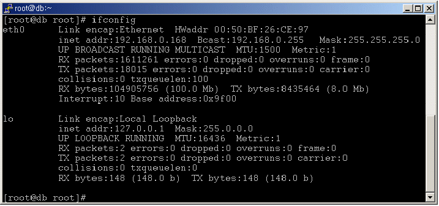
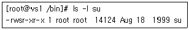
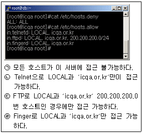
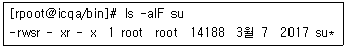
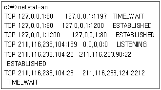
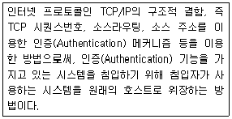
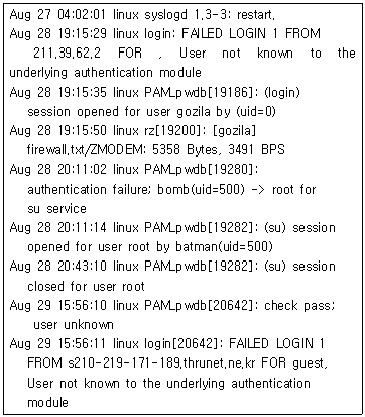
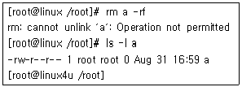

인터넷보안전문가-2급 (2018-10-28 기출문제)
1과목: 정보보호개론
1. 대칭형 암호화 방식의 특징으로 옳지 않은 것은?
- 처리 속도가 빠르다.
- RSA와 같은 키 교환 방식을 사용한다.
- 키의 교환 문제가 발생한다.
- SSL과 같은 키 교환 방식을 사용한다.
(정답률: 70%)

2. WWW에서의 보안 프로토콜로 옳지 않은 것은?
- S-HTTP(Secure Hypertext Transfer Protocol)
- SEA(Security Extension Architecture)
- PGP(Pretty Good Privacy)
- SSL(Secure Sockets Layer)
(정답률: 69%)
3. SET(Secure Electronic Transaction)의 기술구조에 대한 설명으로 옳지 않은 것은?
- SET은 기본적으로 X.509 전자증명서에 기술적인 기반을 두고 있다.
- SET에서 제공하는 인터넷에서의 안전성은 모두 암호화에 기반을 두고 있고, 이 암호화 기술은 제 3자가 해독하기가 거의 불가능하다.
- 암호화 알고리즘에는 공개키 암호 시스템만 사용된다.
- 이 방식은 n명이 인터넷상에서 서로 비밀통신을 할 경우 'n(n-1)/2' 개 키를 안전하게 관리해야 하는 문제점이 있다.
(정답률: 80%)
4. Kerberos의 용어 설명 중 옳지 않은 것은?
- AS : Authentication Server
- KDC : Kerberos 인증을 담당하는 데이터 센터
- TGT : Ticket을 인증하기 위해서 이용되는 Ticket
- Ticket : 인증을 증명하는 키
(정답률: 73%)
5. IPSec을 위한 보안 연계(Security Association)가 포함하는 파라미터로 옳지 않은 것은?
- IPSec 프로토콜 모드(터널, 트랜스포트)
- 인증 알고리즘, 인증키, 수명 등의 AH 관련 정보
- 암호 알고리즘, 암호키, 수명 등의 ESP 관련 정보
- 발신지 IP Address와 목적지 IP Address
(정답률: 70%)
6. 암호의 목적에 대한 설명 중 옳지 않은 것은?
- 비밀성(Confidentiality) : 허가된 사용자 이외 암호문 해독 불가
- 무결성(Integrity) : 메시지 변조 방지
- 접근 제어(Access Control) : 프로토콜 데이터 부분의 접근제어
- 부인봉쇄(Non-Repudiation) : 송수신 사실 부정방지
(정답률: 69%)
7. SEED(128 비트 블록 암호 알고리즘)의 특성으로 옳지 않은 것은?
- 데이터 처리단위는 8, 16, 32 비트 모두 가능하다.
- 암ㆍ복호화 방식은 공개키 암호화 방식이다.
- 입출력의 크기는 128 비트이다.
- 라운드의 수는 16 라운드이다.
(정답률: 67%)
8. S-HTTP(Secure Hypertext Transfer Protocol)에 관한 설명 중 옳지 않은 것은?
- 클라이언트와 서버에서 행해지는 암호화 동작이 동일하다.
- PEM, PGP 등과 같은 여러 암호 메커니즘에 사용되는 다양한 암호문 형태를 지원한다.
- 클라이언트의 공개키를 요구하지 않으므로 사용자 개인의 공개키를 선언해 놓지 않고 사적인 트랜잭션을 시도할 수 있다.
- S-HTTP를 탑재하지 않은 시스템과 통신이 어렵다.
(정답률: 74%)
9. 5명의 사용자가 대칭키(Symmetric Key)를 사용하여 주고받는 메시지를 암호화하기 위해서 필요한 키의 총 개수는?
- 2개
- 5개
- 7개
- 10개
(정답률: 75%)
10. 보안과 관련된 용어의 정의나 설명으로 옳지 않은 것은?
- 프락시 서버(Proxy Server) - 내부 클라이언트를 대신하여 외부의 서버에 대해 행동하는 프로그램 서버
- 패킷(Packet) - 인터넷이나 네트워크상에서 데이터 전송을 위해 처리되는 기본 단위로 모든 인터페이스에서 항상 16KB의 단위로 처리
- 이중 네트워크 호스트(Dual-Homed Host) - 최소한 두 개의 네트워크 인터페이스를 가진 범용 컴퓨터 시스템
- 호스트(Host) - 네트워크에 연결된 컴퓨터 시스템
(정답률: 73%)
2과목: 운영체제
11. 다음 Linux 명령어 중에서 해당 사이트와의 통신 상태를 점검할 때 사용하는 명령어는?
- who
- w
- finger
- ping
(정답률: 84%)
12. Linux 시스템을 곧바로 재시작 하는 명령으로 옳지 않은 것은?
- shutdown –r now
- shutdown -r 0
- halt
- reboot
(정답률: 80%)
13. 웹 사이트가 가지고 있는 도메인을 IP Address로 바꾸어 주는 서버는?
- DHCP 서버
- FTP 서버
- DNS 서버
- IIS 서버
(정답률: 82%)
14. Linux 구조 중 다중 프로세스·다중 사용자와 같은 주요 기능을 지원·관리하는 것은?
- Kernel
- Disk Manager
- Shell
- X Window
(정답률: 76%)
15. 디스크의 용량을 확인하는 Linux 명령어는?
- df
- du
- cp
- mount
(정답률: 72%)
16. NTFS의 주요 기능에 대한 설명 중 옳지 않은 것은?
- 파일 클러스터를 추적하기 위해 B-Tree 디렉터리 개념을 사용한다.
- 서버 관리자가 ACL을 이용하여 누가 어떤 파일만 액세스할 수 있는지 등을 통제할 수 있다.
- 교체용 디스크와 고정 디스크 모두에 대해 데이터 보안을 지원한다.
- FAT 보다 대체적으로 빠른 속도를 지원한다.
(정답률: 64%)
17. Linux 시스템에서 기본 명령어가 포함되어 있는 디렉터리는?
- /boot
- /etc
- /bin
- /lib
(정답률: 73%)
18. IIS 웹 서버를 설치한 다음에는 기본 웹사이트 등록정보를 수정하여야 한다. 웹사이트에 접속하는 동시 접속자수를 제한하려고 할때 어느 부분을 수정해야 하는가?
- 성능 탭
- 연결 수 제한
- 연결 시간 제한
- 문서 탭
(정답률: 81%)
19. Linux 파일 시스템의 기본 구조 중 파일에 관한 중요한 정보를 싣는 곳은?
- 부트 블록
- i-node 테이블
- 슈퍼 블록
- 실린더 그룹 블록
(정답률: 79%)
20. 아파치 데몬으로 웹서버를 운영하고자 할 때 반드시 선택해야하는 데몬은?
- httpd
- dhcpd
- webd
- mysqld
(정답률: 79%)
21. Linux에서 프로세스 실행 우선순위를 바꿀 수 있는 명령어는?
- chps
- reserv
- nice
- top
(정답률: 75%)
22. 아래는 Linux 시스템의 ifconfig 실행 결과이다. 옳지 않은 것은?

- eth0의 OUI 코드는 26:CE:97 이다.
- IP Address는 192.168.0.168 이다.
- eth0가 활성화된 후 현재까지 충돌된 패킷이 없다.
- lo는 Loopback 주소를 의미한다.
(정답률: 67%)
23. 다음 명령어 중에서 시스템의 메모리 상태를 보여주는 명령어는?
- mkfs
- free
- ps
- shutdown
(정답률: 73%)
24. 파일 퍼미션이 현재 664인 파일이 ′/etc/file1.txt′ 라는 이름으로 저장되어 있다. 이 파일을 batman 이라는 사용자의 홈디렉터리에서 ′ln′ 명령을 이용하여 ′a.txt′ 라는 이름으로 심볼릭 링크를 생성하였는데, 이 ′a.txt′ 파일의 퍼미션 설정상태는?
- 664
- 777
- 775
- 700
(정답률: 62%)
25. Linux에서 root 유저로 로그인 한 후 ′cp -rf /etc/* ~/temp′ 라는 명령으로 복사를 하였는데, 여기서 ′~′ 문자가 의미하는 뜻은?
- /home 디렉터리
- /root 디렉터리
- root 유저의 home 디렉터리
- 현재 디렉터리의 하위라는 의미
(정답률: 77%)
26. Linux에서 현재 사용하고 있는 쉘(Shell)을 확인해 보기 위한 명령어는?
- echo $SHELL
- vi $SHELL
- echo &SHELL
- vi &SHELL
(정답률: 78%)
27. Linux의 기본 명령어 ′man′의 의미는?
- 명령어에 대한 사용법을 알고 싶을 때 사용하는 명령어
- 윈도우나 쉘을 빠져 나올 때 사용하는 명령어
- 지정한 명령어가 어디에 있는지 경로를 표시
- 기억된 명령어를 불러내는 명령어
(정답률: 79%)
28. Linux에서 su 명령의 사용자 퍼미션을 확인한 결과 ′rws′ 이다. 아래와 같이 사용자 퍼미션에 ′s′ 라는 속성을 부여하기 위한 명령어는?

- chmod 755 su
- chmod 0755 su
- chmod 4755 su
- chmod 6755 su
(정답률: 78%)
29. 삼바서버의 설정파일 안에 보면 'Interfaces = 192.168.1.1/24' 라고 표현되는 부분이 있다. 여기서 '/24' 는 서브넷 마스크를 의미하는데, 다음 중 서브넷 마스크의 해석으로 옳지 않은 것은?
- 255.255.255.192 = /26
- 255.255.255.128 = /25
- 255.255.255.248 = /30
- 255.255.255.0 = /24
(정답률: 80%)
30. VI(Visual Interface) 에디터에서 편집행의 줄번호를 출력해주는 명령은?
- :set nobu
- :set nu
- :set nonu
- :set showno
(정답률: 72%)
3과목: 네트워크
31. OSI 7 Layer 모델에서 오류 검출 기능이 수행되는 계층은?
- 물리 계층
- 데이터링크 계층
- 네트워크 계층
- 응용 계층
(정답률: 62%)
32. 광통신의 특징으로 옳지 않은 것은?
- 전송손실이 아주 적다.
- 주파수가 마이크로파보다 수만 배 높은 광파를 사용하므로 매우 많은 정보량을 장거리 전송할 수 있다.
- 비전도체(유리)이므로 습기에 영향을 받지 않고 타전자파나 고압선 전류 유도에 대한 방해를 전혀 받지 않아 송전선에 광섬유케이블을 함께 실어 실제 전송할 수 있다.
- 광섬유케이블은 무겁고 굵어서 포설하기가 용이하지 않다.
(정답률: 70%)
33. 네트워크 토폴로지 구성방법 중 모든 네트워크 노드를 개별 라인으로 각각 연결하며 각각의 라인을 모두 중간에서 연결 처리하는 별도의 신호를 처리하는 장치가 필요한 별모양의 네트워크 방식은?
- 메쉬(Mesh)
- 링(Ring)
- 버스(Bus)
- 스타(Star)
(정답률: 87%)
34. IPv6 프로토콜의 구조는?
- 32bit
- 64bit
- 128bit
- 256bit
(정답률: 83%)
35. LAN에서 사용하는 전송매체 접근 방식으로 일반적으로 Ethernet 이라고 불리는 것은?
- Token Ring
- Token Bus
- CSMA/CD
- Slotted Ring
(정답률: 74%)
36. Internet Layer를 구성하는 프로토콜들에 대한 설명으로 옳지 않은 것은?
- IP는 TCP와 같이 신뢰성 있는 통신을 제공한다.
- ARP는 상대방의 IP Address는 알고 있으나, 상대방의 MAC Address를 모를 경우에 사용되는 프로토콜이다.
- RARP는 Disk가 없는 터미널에서 자신의 랜카드 상의 MAC은 알고 있으나 자신의 IP를 모를 경우에 사용되는 프로토콜이다.
- ICMP는 Ping 등을 지원할 수 있는 프로토콜이며, 또한 IP 데이터 그램의 전달과정 중에 발생할 수 있는 에러에 대한 보고용으로 사용된다.
(정답률: 54%)
37. 다음 중 IP Address관련 기술들에 대한 설명으로 옳지 않은 것은?
- DHCP는 DHCP서버가 존재하여, 요청하는 클라이언트들에게 IP Address, Gateway, DNS등의 정보를 일괄적으로 제공하는 기술이다.
- 클라이언트가 DHCP 서버에 DHCP Request를 보낼 때 브로드캐스트로 보낸다.
- 192.168.10.2는 사설 IP Address이다.
- 공인 IP Address를 다른 공인 IP로 변환하여 내보내는 기술이 NAT이다.
(정답률: 66%)
38. 다음 프로토콜 중 OSI 7 Layer 계층이 다른 프로토콜은?
- ICMP(Internet Control Message Protocol)
- IP(Internet Protocol)
- ARP(Address Resolution Protocol)
- TCP(Transmission Control Protocol)
(정답률: 61%)
39. SNMP(Simple Network Management Protocol)에 대한 설명으로 옳지 않은 것은?
- RFC(Request For Comment) 1157에 명시되어 있다.
- 현재의 네트워크 성능, 라우팅 테이블, 네트워크를 구성하는 값들을 관리한다.
- TCP 세션을 사용한다.
- 상속이 불가능하다.
(정답률: 68%)
40. 네트워크 주소에 대한 설명 중 옳지 않은 것은?
- X.121 : X.25 공중네트워크에서의 주소지정 방식
- D Class 주소 : 맨 앞의 네트워크 주소가 ′1111′ 로서 멀티캐스트 그룹을 위한 주소이다.
- A Class 주소 : 하나의 A Class 네트워크는 16,777,216(224)개 만큼의 호스트가 존재할 수 있다.
- B Class 주소 : 네트워크 주소 부분의 처음 2개 비트는 ′10′이 되어야 한다.
(정답률: 69%)
41. TCP 포트 중 25번 포트가 하는 일반적인 역할은?
- Telnet
- FTP
- SMTP
- SNMP
(정답률: 79%)
42. TCP와 UDP의 차이점을 설명한 것 중 옳지 않은 것은?
- TCP는 전달된 패킷에 대한 수신측의 인증이 필요하지만 UDP는 필요하지 않다.
- TCP는 대용량의 데이터나 중요한 데이터 전송에 이용 되지만 UDP는 단순한 메시지 전달에 주로 사용된다.
- UDP는 네트워크가 혼잡하거나 라우팅이 복잡할 경우에는 패킷이 유실될 우려가 있다.
- UDP는 데이터 전송 전에 반드시 송수신 간의 세션이 먼저 수립되어야 한다.
(정답률: 73%)
43. ICMP(Internet Control Message Protocol)의 메시지 타입으로 옳지 않은 것은?
- Source Quench
- Port Destination Unreachable
- Echo Request, Echo Reply
- Timestamp Request, Timestamp Reply
(정답률: 55%)
44. 다음 중 OSI 7 Layer의 각 Layer 별 Data 형태로서 옳지 않은 것은?
- Transport Layer : Segment
- Network Layer : Packet
- Datalink Layer : Fragment
- Physical Layer : bit
(정답률: 79%)
45. IP Address ′172.16.0.0′인 경우에 이를 14개의 서브넷으로 나누어 사용하고자 할 경우 서브넷 마스크는?
- 255.255.228.0
- 255.255.240.0
- 255.255.248.0
- 255.255.255.248
(정답률: 70%)
4과목: 보안
46. DoS(Denial of Service)의 개념으로 옳지 않은 것은?
- 다량의 패킷을 목적지 서버로 전송하여 서비스를 불가능하게 하는 행위
- 로컬 호스트의 프로세스를 과도하게 fork 함으로서 서비스에 장애를 주는 행위
- 서비스 대기 중인 포트에 특정 메시지를 다량으로 보내 서비스를 불가능하게 하는 행위
- 익스플로러를 사용하여 특정권한을 취득하는 행위
(정답률: 70%)
47. SSL(Secure Socket Layer)에서 제공하는 보안 서비스로 옳지 않은 것은?
- 두 응용간의 기밀성 서비스
- 클라이언트와 서버의 상호 인증
- 메시지 무결성 서비스
- 루트 CA 키 갱신
(정답률: 63%)
48. 아래 TCP_Wrapper 설정 내용으로 올바른 것은?

- ㉠, ㉢
- ㉡, ㉣
- ㉠, ㉡, ㉢
- ㉡, ㉢, ㉣
(정답률: 59%)
49. 아래와 같이 초기설정이 되어있는 ′/bin/su′ 명령어가 있다. Linux 서버의 내부 보안을 위해 ′/bin/su′ 명령어를 root에게는 모든 권한을 ′wheel′이라는 그룹에게는 실행권한만을 부여하려고 한다. 이 과정 중에 올바르지 않은 사항은?

- [root@icqa /bin]#chmod 4710 /bin/su
- [root@icqa /bin]#chown root /bin/su
- [root@icqa /bin]#chgrp wheel /bin/su
- [root@icqa /bin]#chown -u root -g wheel /bin/su
(정답률: 59%)
50. Windows 명령 프롬프트 창에서 ′netstat -an′ 을 실행한 결과이다. 옳지 않은 것은?(단, 로컬 IP Address는 211.116.233.104 이다.)

- http://localhost 로 접속하였다.
- NetBIOS를 사용하고 있는 컴퓨터이다.
- 211.116.233.124에서 Telnet 연결이 이루어져 있다.
- 211.116.233.98로 ssh를 이용하여 연결이 이루어져 있다.
(정답률: 65%)
51. 버퍼 오버플로우(Buffer Overflow) 개념으로 옳지 않은 것은?
- 스택의 일정부분에 익스플로러 코드(Explorer Code)를 삽입하고 어떤 프로그램의 리턴 어드레스(Return Address)를 익스플로러 코드가 위치한 곳으로 돌린다.
- 대체적으로 문자열에 대한 검사를 하지 않아서 일어나는 경우가 많다.
- 소유자가 root인 Setuid가 걸린 응용프로그램인 경우 익스플로러 코드를 이용 root의 권한을 획득할 수 있다.
- Main 프로그램과 Sub 프로그램의 경쟁관계와 Setuid를 이용하여 공격하는 패턴이 존재한다.
(정답률: 50%)
52. Linux의 침입차단시스템 설정 중, 임의의 외부 호스트에서 '210.119.227.226'으로 telnet 접속을 막는 규칙을 삽입하기 위한 iptables 명령어로 올바른 것은?
- /sbin/iptables -A INPUT -i eth0 -s 0/0 -d 210.119.227.226 -p tcp --dport telnet -j drop
- /sbin/iptables -A OUTPUT -i eth0 -s 0/0 -d 210.119.227.226 -p tcp --dport telnet -j drop
- /sbin/iptables -A INPUT -i eth0 -s 0/0 -d 210.119.227.226 -p tcp --dport telnet -j accept
- /sbin/iptables -A OUTPUT -i eth0 -s 0/0 -d 210.119.227.226 -p tcp --dport telnet -j accept
(정답률: 63%)
53. 방화벽 시스템에 관한 설명 중 옳지 않은 것은?
- 외부뿐만 아니라 내부 사용자에 의한 보안 침해도 방어할 수 있다.
- 방화벽 시스템 로깅 기능은 방화벽 시스템에 대한 허가된 접근뿐만 아니라 허가되지 않은 접근이나 공격에 대한 정보도 로그 파일에 기록해 두어야 한다.
- 네트워크 보안을 혁신적으로 개선하여 안전하지 못한 서비스를 필터링 함으로써 내부 망의 호스트가 가지는 취약점을 감소시켜 준다.
- 추가되거나 개조된 보안 소프트웨어가 많은 호스트에 분산되어 탑재되어 있는 것보다 방화벽 시스템에 집중적으로 탑재되어 있는 것이 조직의 관점에서 더 경제적이다.
(정답률: 56%)
54. 다음에서 설명하는 기법은?

- IP Sniffing
- IP Spoofing
- Race Condition
- Packet Filtering
(정답률: 70%)
55. TCP 프로토콜의 연결 설정을 위하여 3-Way Handshaking 의 취약점을 이용하여 실현되는 서비스 거부 공격은?
- Ping of Death
- 스푸핑(Spoofing)
- 패킷 스니핑(Packet Sniffing)
- SYN Flooding
(정답률: 72%)
56. Linux에서 각 사용자의 가장 최근 로그인 시간을 기록하는 로그 파일은?
- cron
- messages
- netconf
- lastlog
(정답률: 70%)
57. 다음은 어떤 시스템의 messages 로그파일의 일부이다. 로그파일의 분석으로 옳지 않은 것은?

- 8월 27일 syslog daemon이 재구동된 적이 있다.
- 8월 28일 gozila라는 ID로 누군가 접속한 적이 있다.
- 8월 28일 gozila라는 ID로 누군가가 접속하여 firewall.txt 파일을 다운 받아갔다.
- batman 이라는 사람이 8월 28일에 su 명령을 사용하여 root 권한을 얻었다.
(정답률: 67%)
58. 스머프 공격(Smurf Attack)에 대한 설명으로 올바른 것은?
- 두 개의 IP 프래그먼트를 하나의 데이터 그램인 것처럼 하여 공격 대상의 컴퓨터에 보내면, 대상 컴퓨터가 받은 두 개의 프래그먼트를 하나의 데이터 그램으로 합치는 과정에서 혼란에 빠지게 만드는 공격이다.
- 서버의 버그가 있는 특정 서비스의 접근 포트로 대량의 문자를 입력하여 전송하면, 서버의 수신 버퍼가 넘쳐서 서버가 혼란에 빠지게 만드는 공격이다.
- 서버의 SMTP 서비스 포트로 대량의 메일을 한꺼번에 보내고, 서버가 그것을 처리하지 못하게 만들어 시스템을 혼란에 빠지게 하는 공격이다.
- 출발지 주소를 공격하고자 하는 컴퓨터의 IP Address로 지정한 후, 패킷신호를 네트워크 상의 컴퓨터에 보내게 되면, 패킷을 받은 컴퓨터들이 반송 패킷을 다시 보내게 되는데, 이러한 원리를 이용하여 대상 컴퓨터에 갑자기 많은 양의 패킷을 처리하게 함으로써 시스템을 혼란에 빠지게 하는 공격이다.
(정답률: 72%)
59. Linux에서 root 권한 계정이 ′a′ 라는 파일을 지우려 했을때 나타난 결과이다. 이 파일을 지울 수 있는 방법은?

- 파일크기가 ′0′ 바이트이기 때문에 지워지지 않으므로, 파일에 내용을 넣은 후 지운다.
- 현재 로그인 한 사람이 root가 아니므로 root로 로그인한다.
- chmod 명령으로 쓰기금지를 해제한다.
- chattr 명령으로 쓰기금지를 해제한다.
(정답률: 75%)
60. 사용자의 개인 정보를 보호하기 위한 바람직한 행동으로 보기 어려운 것은?
- 암호는 복잡성을 적용하여 사용한다.
- 로그인 한 상태에서 자리를 비우지 않는다.
- 중요한 자료는 따로 백업을 받아 놓는다.
- 좋은 자료의 공유를 위해 여러 디렉터리에 대한 공유를 설정해 둔다.
(정답률: 84%)